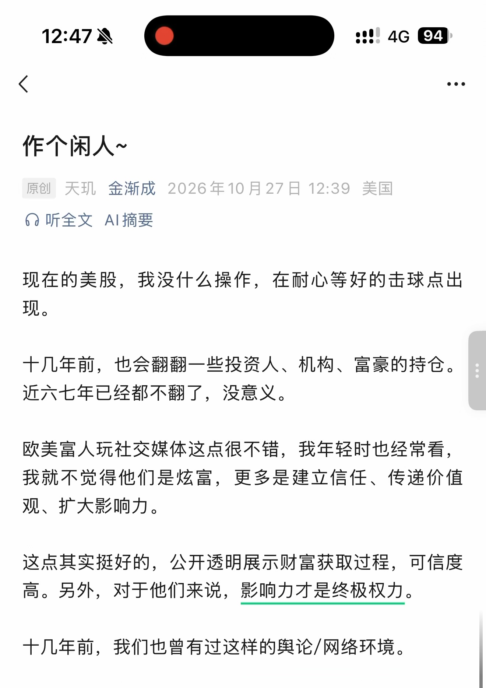
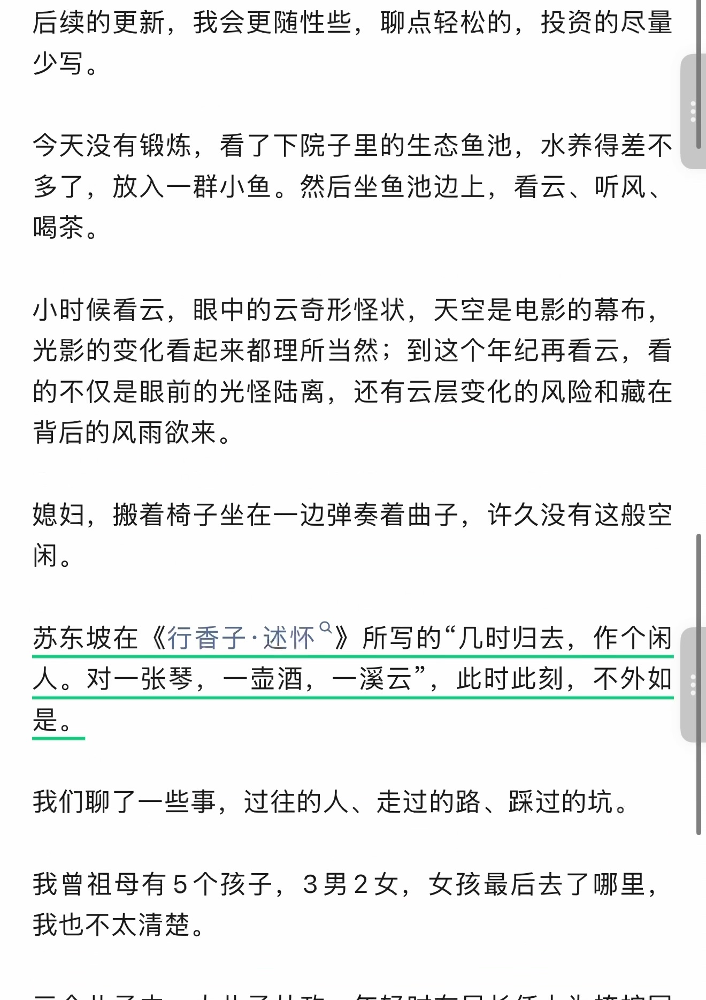
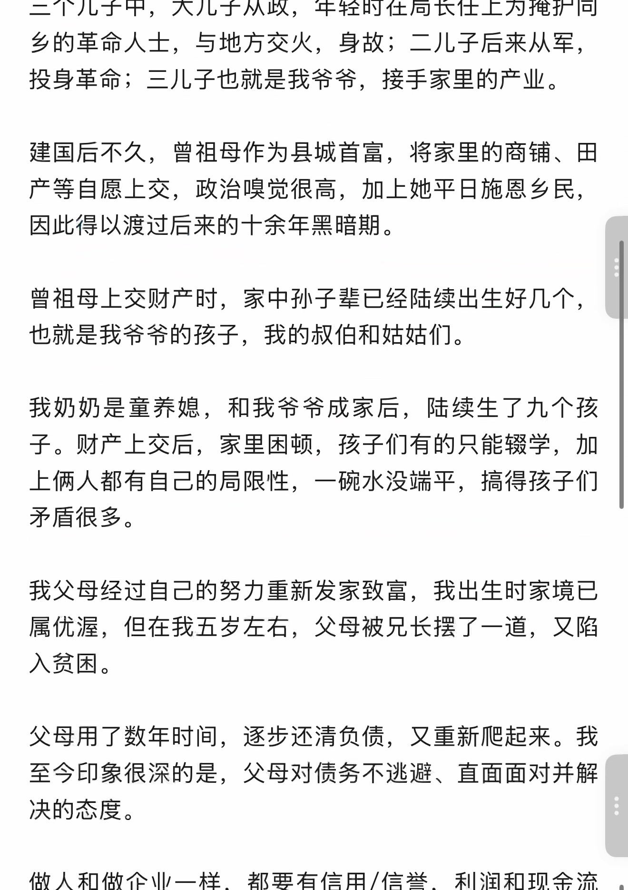
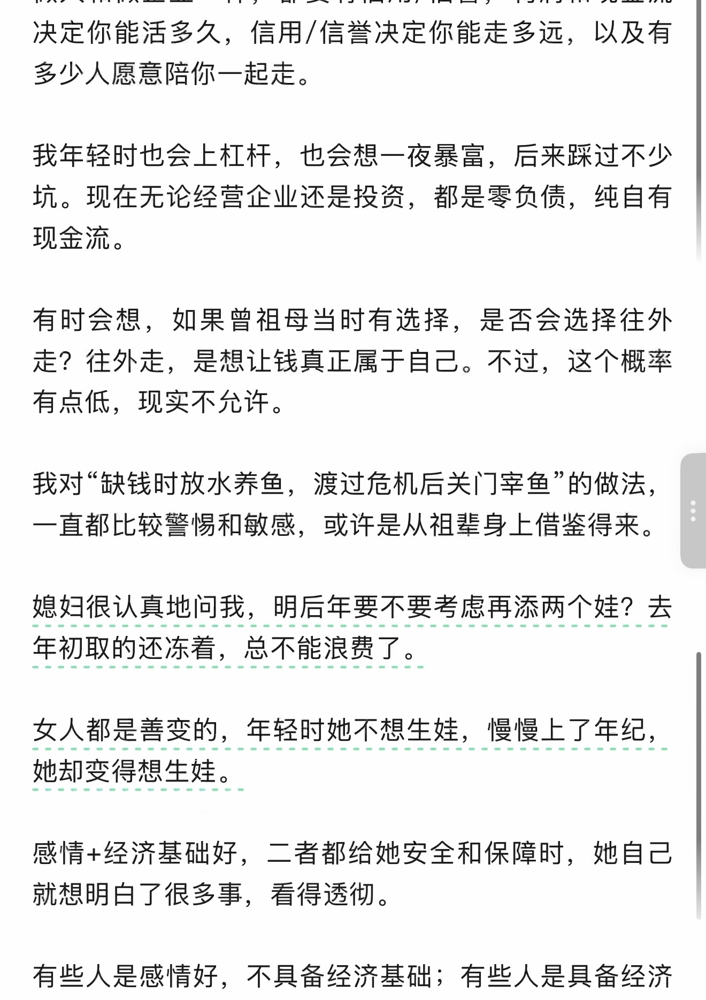
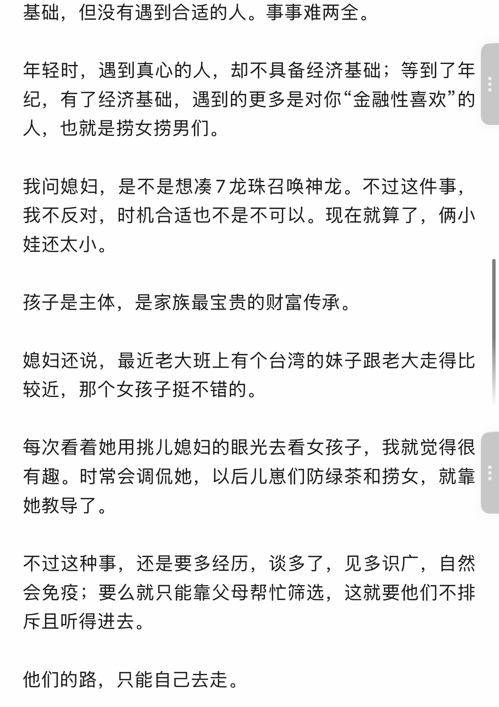
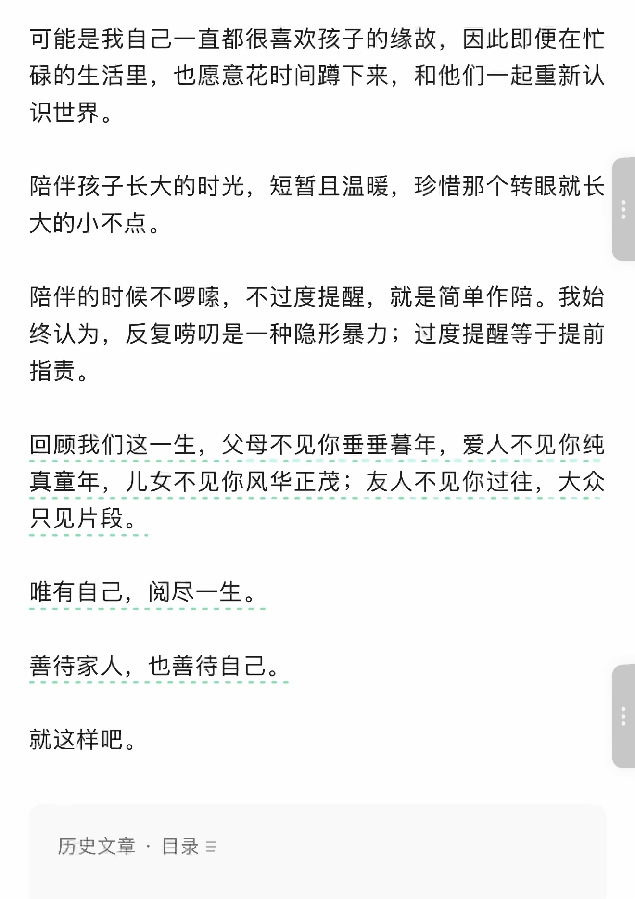
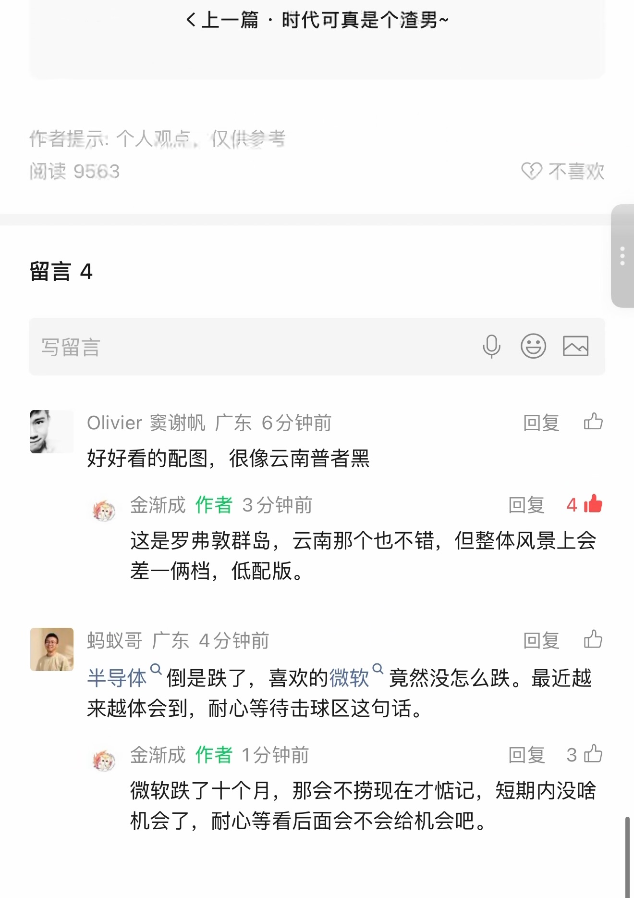

作个闲人~
识别文字连续阅读 · 原图附后
原始 PDF 不公开，本页展示捕获页面的截图。 识别文字按页序连续显示，全部原始截图附在文末，便于对照。文字由视觉转录整理，尚未经人工逐字核对，可能存在错字、漏字、漏行、顺序或断行错误。留言与作者回复仅限截图中可见的内容，不代表完整线上留言，也未据此推断留言总数。
OCR 识别提示（待核对）
- OCR/视觉转录文字，尚未逐字校对；可能错字、漏字、漏行，数字、姓名、表情、标点及断行也可能有误，请以截图为准。
- 这里只保留 PDF 已截到的正文、留言和作者回复；截图以外的留言不在此存档中。
- 未从截图推断留言总数或回复关系；手机界面文字也可能混入 OCR。
- 方括号中的表情说明是转录注释，原始表情请对照截图。
- 页面边界仅露出少量字形的重复行归到文字主体可见的相邻页；不推断缺失内容。
识别文字
文字按截图页序整理；页边重复行仅保留一次，原始 PDF 不公开。方括号中的表情说明为转录注释。
第 1 页对照原图
作个闲人~
原创 天玑 金渐成 2026年10月27日 12:39 美国
现在的美股，我没什么操作，在耐心等好的击球点出现。
十几年前，也会翻翻一些投资人、机构、富豪的持仓。近六七年已经都不翻了，没意义。
欧美富人玩社交媒体这点很不错，我年轻时也经常看，我就不觉得他们是炫富，更多是建立信任、传递价值观、扩大影响力。
这点其实挺好的，公开透明展示财富获取过程，可信度高。另外，对于他们来说，影响力才是终极权力。
十几年前，我们也曾有过这样的舆论/网络环境。
第 2 页对照原图
后续的更新，我会更随性些，聊点轻松的，投资的尽量少写。
今天没有锻炼，看了下院子里的生态鱼池，水养得差不多了，放入一群小鱼。然后坐鱼池边上，看云、听风、喝茶。
小时候看云，眼中的云奇形怪状，天空是电影的幕布，光影的变化看起来都理所当然；到这个年纪再看云，看的不仅是眼前的光怪陆离，还有云层变化的风险和藏在背后的风雨欲来。
媳妇，搬着椅子坐在一边弹奏着曲子，许久没有这般空闲。
苏东坡在《行香子·述怀》所写的“几时归去，作个闲人。对一张琴，一壶酒，一溪云”，此时此刻，不外如是。
我们聊了一些事，过往的人、走过的路、踩过的坑。
我曾祖母有5个孩子，3男2女，女孩最后去了哪里，我也不太清楚。
第 3 页对照原图
三个儿子中，大儿子从政，年轻时在局长任上为掩护同乡的革命人士，与地方交火，身故；二儿子后来从军，投身革命；三儿子也就是我爷爷，接手家里的产业。
建国后不久，曾祖母作为县城首富，将家里的商铺、田产等自愿上交，政治嗅觉很高，加上她平日施恩乡民，因此得以渡过后来的十余年黑暗期。
曾祖母上交财产时，家中孙子辈已经陆续出生好几个，也就是我爷爷的孩子，我的叔伯和姑姑们。
我奶奶是童养媳，和我爷爷成家后，陆续生了九个孩子。财产上交后，家里困顿，孩子们有的只能辍学，加上俩人都有自己的局限性，一碗水没端平，搞得孩子们矛盾很多。
我父母经过自己的努力重新发家致富，我出生时家境已属优渥，但在我五岁左右，父母被兄长摆了一道，又陷入贫困。
父母用了数年时间，逐步还清负债，又重新爬起来。我至今印象很深的是，父母对债务不逃避、直面面对并解决的态度。
做人和做企业一样，都要有信用/信誉，利润和现金流
第 4 页对照原图
决定你能活多久，信用/信誉决定你能走多远，以及有多少人愿意陪你一起走。
我年轻时也会上杠杆，也会想一夜暴富，后来踩过不少坑。现在无论经营企业还是投资，都是零负债，纯自有现金流。
有时会想，如果曾祖母当时有选择，是否会选择往外走？往外走，是想让钱真正属于自己。不过，这个概率有点低，现实不允许。
我对“缺钱时放水养鱼，渡过危机后关门宰鱼”的做法，一直都比较警惕和敏感，或许是从祖辈身上借鉴得来。
媳妇很认真地问我，明后年要不要考虑再添两个娃？去年初取的还冻着，总不能浪费了。
女人都是善变的，年轻时她不想生娃，慢慢上了年纪，她却变得想生娃。
感情+经济基础好，二者都给她安全和保障时，她自己就想明白了很多事，看得透彻。
有些人是感情好，不具备经济基础；有些人是具备经济
第 5 页对照原图
基础，但没有遇到合适的人。事事难两全。
年轻时，遇到真心的人，却不具备经济基础；等到了年纪，有了经济基础，遇到的更多是对你“金融性喜欢”的人，也就是捞女捞男们。
我问媳妇，是不是想凑7龙珠召唤神龙。不过这件事，我不反对，时机合适也不是不可以。现在就算了，俩小娃还太小。
孩子是主体，是家族最宝贵的财富传承。
媳妇还说，最近老大班上有个台湾的妹子跟老大走得比较近，那个女孩子挺不错的。
每次看着她用挑儿媳妇的眼光去看女孩子，我就觉得很有趣。时常会调侃她，以后儿崽们防绿茶和捞女，就靠她教导了。
不过这种事，还是要多经历，谈多了，见多识广，自然会免疫；要么就只能靠父母帮忙筛选，这就要他们不排斥且听得进去。
他们的路，只能自己去走。
第 6 页对照原图
可能是我自己一直都很喜欢孩子的缘故，因此即便在忙碌的生活里，也愿意花时间蹲下来，和他们一起重新认识世界。
陪伴孩子长大的时光，短暂且温暖，珍惜那个转眼就长大的小不点。
陪伴的时候不啰嗦，不过度提醒，就是简单作陪。我始终认为，反复唠叨是一种隐形暴力；过度提醒等于提前指责。
回顾我们这一生，父母不见你垂垂暮年，爱人不见你纯真童年，儿女不见你风华正茂；友人不见你过往，大众只见片段。
唯有自己，阅尽一生。
善待家人，也善待自己。
就这样吧。
历史文章 · 目录
第 7 页对照原图
上一篇 · 时代可真是个渣男~
作者提示：个人观点，仅供参考
阅读 9563
留言 4
Olivier 窦谢帆 广东 6分钟前
好好看的配图，很像云南普者黑
金渐成 作者 3分钟前 [赞4]
这是罗弗敦群岛，云南那个也不错，但整体风景上会差一俩档，低配版。
蚂蚁哥 广东 4分钟前
半导体倒是跌了，喜欢的微软竟然没怎么跌。最近越来越体会到，耐心等待击球区这句话。
金渐成 作者 1分钟前 [赞3]
微软跌了十个月，那会不捞现在才惦记，短期内没啥机会了，耐心等看后面会不会给机会吧。
第 8 页对照原图
[页脚互动数字：371、239、65、4。]
原始图片 · 8 页
第 1 页 · 原始截图


第 2 页 · 原始截图


第 3 页 · 原始截图


第 4 页 · 原始截图


第 5 页 · 原始截图


第 6 页 · 原始截图


第 7 页 · 原始截图


第 8 页 · 原始截图

按日期浏览全部来源（同日按条目标识排序）
回到页首